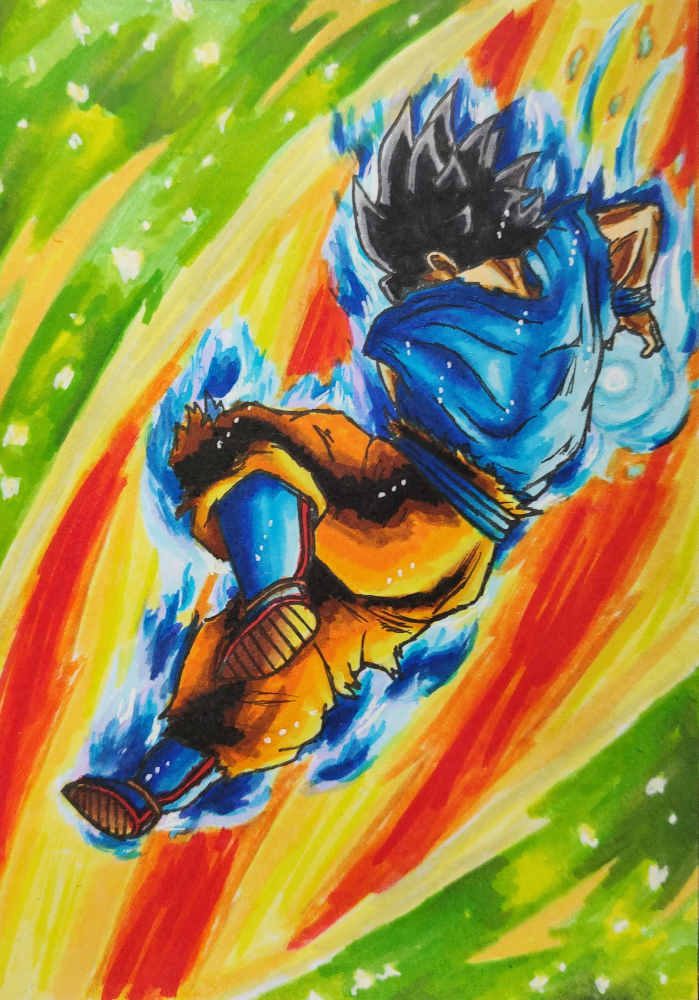

My art
Here's some of the art I've made over the years. Most of these are fairly recent works, especially the digital pieces. But I've also included some sketches and older artworks I'm still proud of to show variety and my roots.
I've been drawing and making art since very young, having less time to do so recently. So a lot of art I've made isn't up to my current standards anymore. These are all still works I'm at least somewhat proud of.
Have a look around and enjoy!
Digital art

A lot of these top works were drawings I made based on games that I made videos on. For the one on the left it's a climactic showdown between a late-game boss and the player.
The boss looming in the distance with light behind it is meant to be intimidating and a symbol of the challenge ahead.
The player in the foreground bravely raisng it's sword is a symbol of how the player faces the reign of this boss in the game, without spoiling too much.
Below you'll be able to see some more thumbnail images I made for different games.
Physical (paper) art
My physical art is mostly a bit older than my digital art. Since getting a drawing tablet I swtiched to mostly sketching physical, while finishing the works digitally.
These are a few physical works I'm still proud of and had a lot of fun making.
The first drawing you'll see below was actually made in tandem with research for the processing light project you'll see on this page.
And the other drawings shown here were just some I made in my free time, but still like, mostly for the use of color and variety of material.
One of these drawings will usually have pencils, fineliners, markers, sometimes colored pencils and gell pens used.



Sketches and old work
The sketches you'll see here were made fairly recently and mostly just for fun. The more finished works here are some older ones I still wanted to show.
The project on the left here was a project I made for a school assignment. It was a fairly open exercise. I took great inspiration from an impressionist artist I love, Claude Monet.
He had a garden he made himself that functioned as a small ecosystem. From this I thought of a space traveller called M0n3t who had a garden consisting of plants from various different planets.
All the plants had some connection to each other. One making a resource the other used, for instance. This also made a small ecosystem, just like the real garden.
There was also a journal I made that had all the plants listed inside, almost like a botanical, that also detailed what he found travelling. I also put in a work that was part of a practical exam.
For this work I decided to work with multiple styles to tell different stories, centered around a window salesman. Windows into different lives.